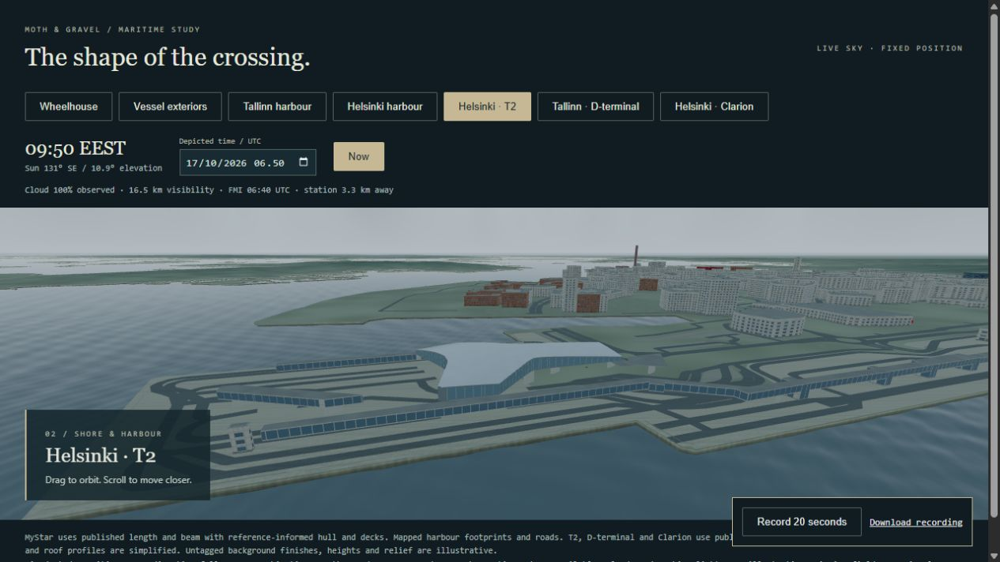

A FERRY THAT STAYS IN HARBOUR
The crossing,
held still.
A passenger ferry waits off Tallinn. The sea around it moves. The sky is the morning’s. The ship goes nowhere, and its bridge says so.
This is a maritime study built on Raivari, our own framework: one ferry, two harbours and a wheelhouse, lit for day and for night.
We use it to ask what an instrument screen owes its reader when part of the picture is observed, part is fixed and part is simply not there.


Fixed positions. Observed weather. A depicted night. The ferry, the harbours and the bridge are drawn from published dimensions, mapped footprints and architectural references, then simplified. Nothing here comes from aboard the ship, and this page carries no live feed. It is a visualisation study, not navigation.
01 / THE WATER KEEPS MOVING
The ship stays.
The sea does not.
The surface follows nearby FMI wind and wave observations where they are available; visual defaults fill the fields that are missing. The ferry sits at its study position off Tallinn, with a speed over ground of zero.
Read the sequence
- A fixed position. The ferry rests beside the pier at its study position under an overcast morning sky. The weather comes from an FMI observation at 06:40 UTC.
- The water moves. Waves pass along the hull and the pier. The ship does not travel.
- A short orbit. The camera turns around the ferry and finishes looking at its bow from ahead.
02 / THE BRIDGE, DAY AND NIGHT
Enough light
to read by.
Inside the wheelhouse, the chart, navigation and contact screens sit in a physical console. One dimmer drives both their pixels and the light they spill onto the desk. At night the screens are the brightest things in the room, so their brightness is a decision, not a default.


Read the sequence
- At the chart station. The view holds close to the physical console: the chart at 12 nautical miles, its range switch and the navigation screen beside it.
- A fixed study. The navigation screen names the study before its numbers: fixed study, no live voyage, 0.0 knots.
Read the sequence
- Lights down. The wheelhouse is dark. The instrument faces and their labels stay readable.
- Navigation and contacts. The view settles on the navigation screen and the contact list: no nearby AIS reports received, no synthetic contacts added.
- The weather stays put. Morning observations are retained for this light study. It is not a forecast.
- FIXED
Say what is standing still.
The navigation screen names the study before it gives a number. A speed of zero is true here, and still worth qualifying.
- MISSING
Leave the dash.
Depth, rudder and radar have no source in this study. A dash and a plain label are better than a plausible figure.
- NIGHT
Light for reading, not for show.
Night instruments should be legible without lighting the room. The screens and their spill on the console dim together.
03 / TWO HARBOURS
Helsinki and Tallinn,
after dark.
Footprints and roads come from OpenStreetMap. Helsinki’s West Terminal 2 and Tallinn’s D-terminal are shaped from published architectural references. Facade spacing, roof profiles and background heights are simplified for harbour viewing distance.




04 / THE SAME WATER, FROM ABOVE
Coastal watch.
The study looks out from one bridge. Coastal watch looks down on the gulf: a real coastline with synthetic vessel tracks. Its tracks and alerts are simulated, and it does not run the track-fusion pipeline.


05 / OUR OWN GROUND
Built on Raivari.
Raivari is the studio’s own full-stack TypeScript framework for Bun. It holds the parts we keep reaching for, so each new piece of work starts on firm ground.
- RUNTIMEBun, with React 19 on the client
- RPCServer functions without the plumbing, CBOR on the wire
- RESTTyped endpoints with Zod validation and OpenAPI
- DATAA pure functional PostgreSQL query builder
- AGENTSAI agent orchestration, an MCP adapter and pub/sub
- STREAMSServer-sent events, NDJSON and WebSocket subscriptions
The maritime study uses a modest slice of it. Bun bundles the scene and serves two harbour weather endpoints of its own. React 19 and three.js draw the ship, the harbours and the wheelhouse.
The ship, the console and the camera are ordinary components, shared with a separate dashboard view in the same workspace; that dashboard talks to its server through Raivari’s generated, typed RPC client. Every capture on this page comes from the fixed study.
Raivari is private for now. We can describe it here; its code stays in the workshop.
Open the working record
The fresh stills and three films were captured on 17 October 2026 from a local build of Raivari, the studio’s private repository, at revision a7ba282d5a96b9b0cb7680ab89c39992212438a2. That work was merged to main as abe8b9153caa2d92fb93fc5f7566b33428924e99 in pull request 125. The application source is not publicly available.
The harbour and ferry lighting screenshots are earlier development captures from 15 October; their precise commits are not asserted. The Coastal watch captures were recorded on 15 October 2026 at revision 397a91e875aa942bdefb31dacb9c49099b0dc7fe, the work of pull request 126.
The films are direct MediaRecorder captures of the rendered canvas: silent WebM transcoded to H.264, with variable frame timing retained and at most one pixel of padding. No motion is interpolated. Browser capture has an uneven frame cadence, and frames can begin late under load.
The stills are browser JPEG screenshots, published unchanged and linked from each figure; resized WebP copies are used for display. Recent captures include the study’s local recording controls.
THE NEXT OBSERVATION
Would you read it
as a voyage?
The next useful step is to show the night bridge to someone who stands a watch for a living, without explaining it first. Ask what the ship is doing, how they know, and which label they found first.
If they read a fixed study as a live crossing, the labels still have work to do. If they find the dash before the number, the screen is doing its job.
Bring a difficult signal